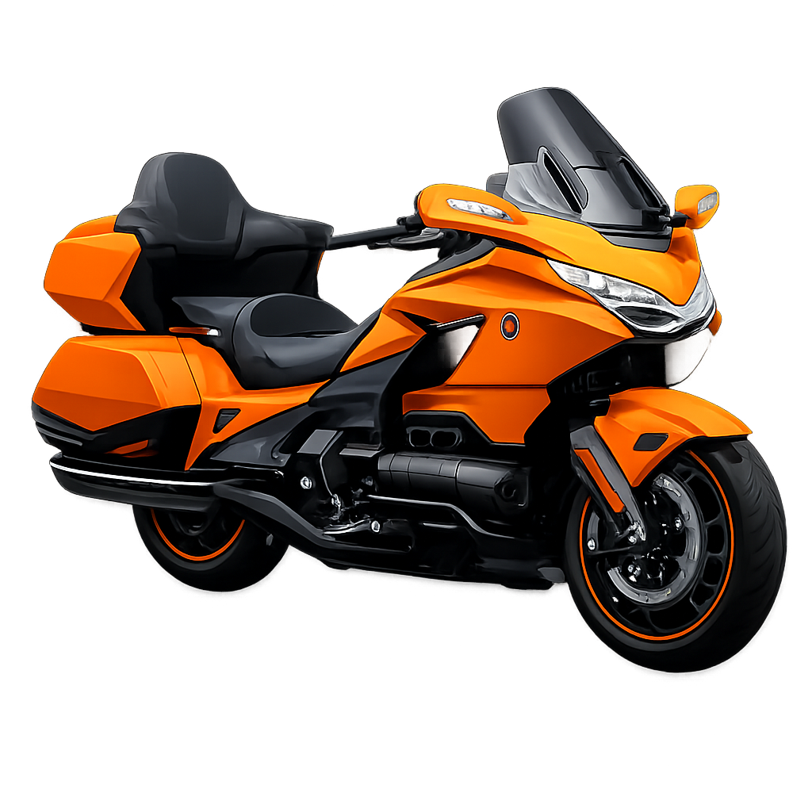
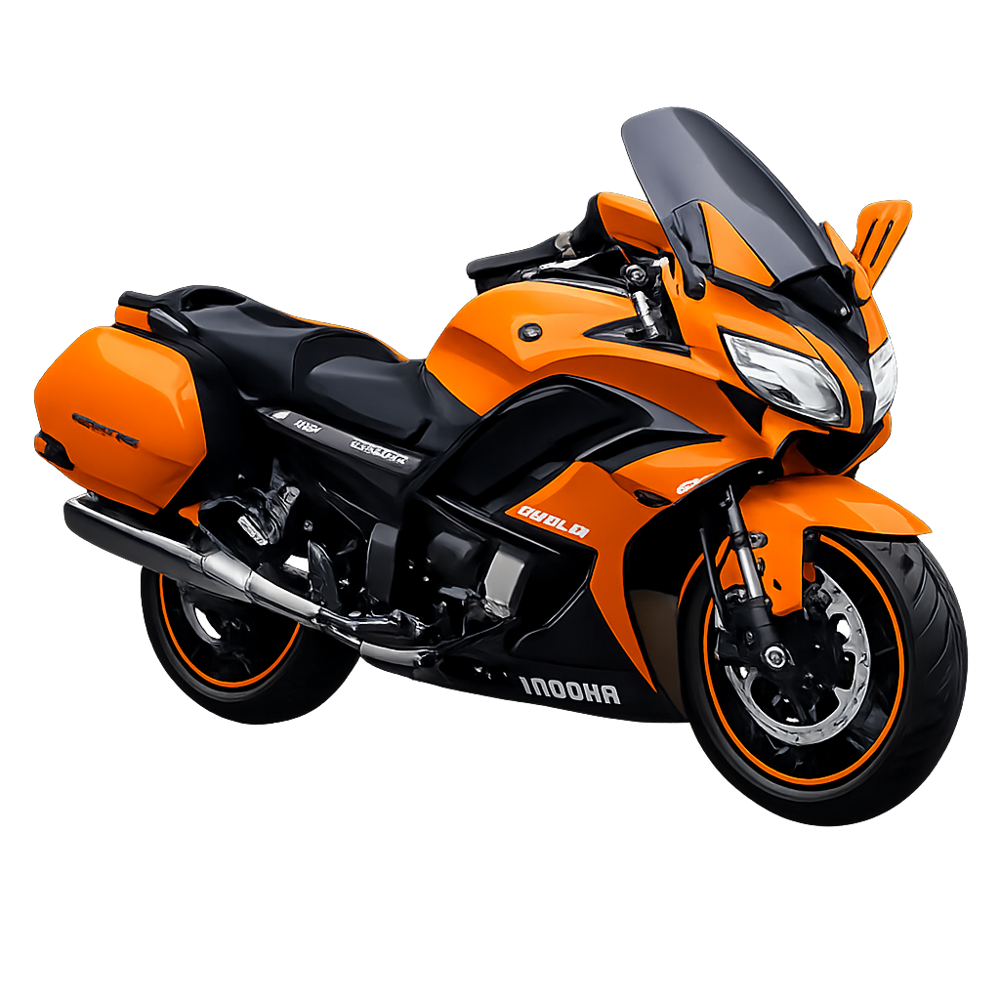
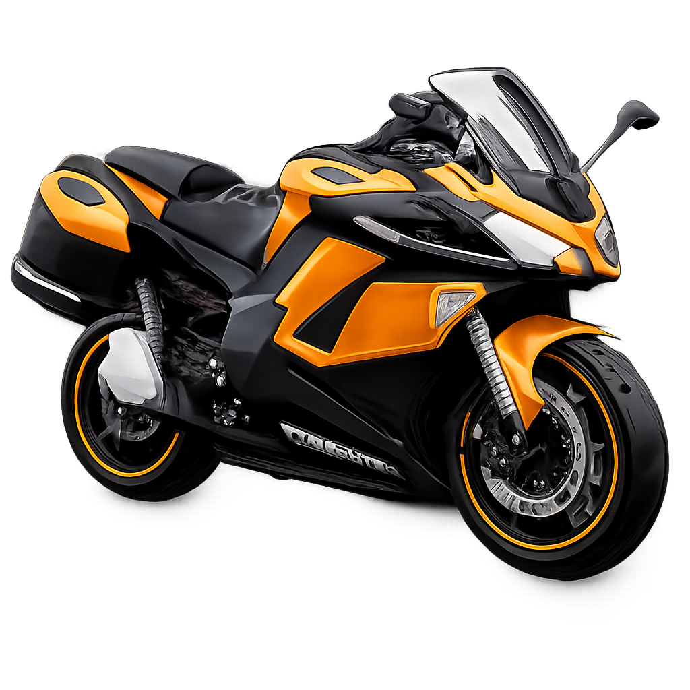

Les Motos Tourisme

Honda Gold Wing
- Moteur : 6 cylindres à plat (Flat-Six), 1833 cm³
- Puissance : ≈ 126 ch
- Vitesse maximale : ≈ 180 km/h
- Confort : Très élevé (sièges larges, position relax)
- Technologie : Écran TFT, navigation, Apple CarPlay / Android Auto, régulateur de vitesse, modes de conduite, ABS
- Transmission : Manuelle ou automatique DCT
- Châssis : Aluminium, stabilité maximale
- Design : Luxe, imposant, orienté long trajet
- Utilisation : Longs voyages, autoroute, duo
- Prix : ≈ 28 000 – 33 000 €

Yamaha FJR1300
- Moteur : 4 cylindres en ligne, 1298 cm³
- Puissance : ≈ 146 ch
- Vitesse maximale : ≈ 250 km/h
- Confort : Élevé (position relax, selle confortable)
- Technologie : Régulateur de vitesse, modes de conduite, traction control, ABS, pare-brise électrique
- Transmission : Cardan (faible entretien)
- Châssis : Aluminium, très stable à haute vitesse
- Design : Sportif et élégant
- Utilisation : Longs trajets, autoroute, duo
- Prix : ≈ 17 000 – 19 000 €

BMW R1250RT
- Moteur : Bicylindre à plat (Boxer), 1254 cm³
- Puissance : ≈ 136 ch
- Vitesse maximale : ≈ 200 km/h
- Confort : Très élevé (selle confortable, excellente protection aérodynamique)
- Technologie : Modes de conduite, contrôle de traction, ABS Pro, régulateur de vitesse, écran TFT, suspensions électroniques (ESA)
- Châssis : Très stable, idéal pour les longs trajets
- Design : Élégant et premium
- Utilisation : Longs voyages, autoroute, duo
- Prix : ≈ 22 000 – 24 000 €

Kawasaki Ninja 1000SX
- Moteur : 4 cylindres en ligne, 1 043 cm³
- Puissance : ≈ 142 ch
- Vitesse maximale : ≈ 250 km/h
- Confort : Élevé (position de conduite sportive mais confortable)
- Technologie : Modes de conduite, contrôle de traction, quick-shifter, régulateur de vitesse, ABS, écran TFT
- Transmission : Chaîne
- Châssis : Cadre aluminium, très stable à haute vitesse
- Design : Sportif et élégant
- Utilisation : Route sportive, longs trajets, duo
- Prix : ≈ 14 000 – 16 000 €